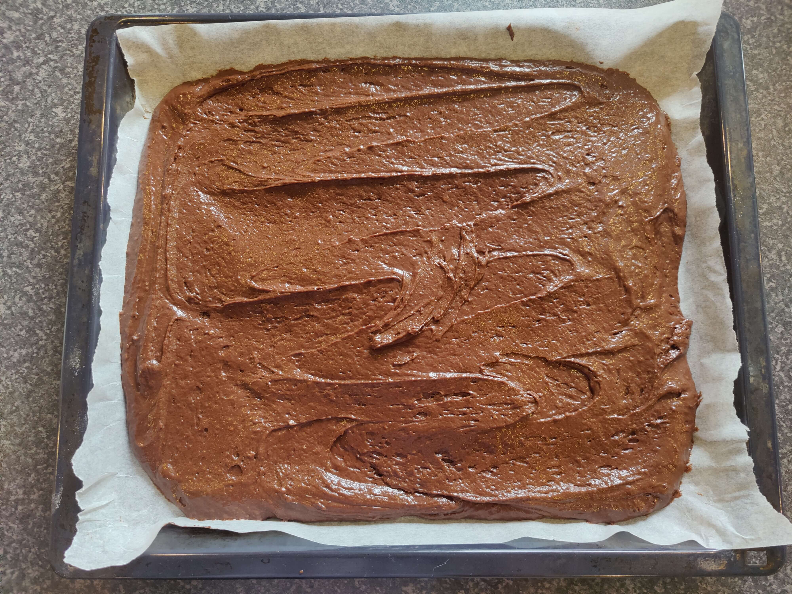
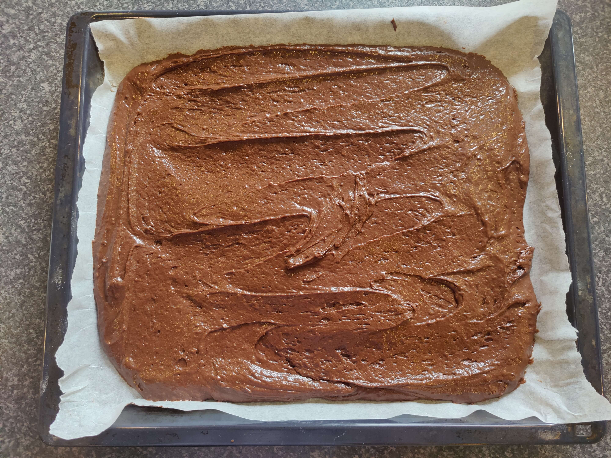

ingredienser
- 150 gram margarine
- 600 gram sukker
- 4 æg
- 4 dl kærnemælk
Tørre indgredienser
- 100 gram kakao
- 600 gram mel
- 1 tsk bagepulver
- 2 tsk natron
- 1 tsk vaniljesukker
Dejen cirka 20 minutter
I ovnen 20-30 minutter
I alt 40-50 minutter
ovnen forvarmes på 200 grader
Smelt 150 gram margarine ved lav varme
Gryden med margarine
Æg
Sukker
Kærnemælk
De tørre ingredienser samles i en skål
Margarine, æg og sukker piskes sammen
De tørre ingredienser sigtes ned i blandingen, med margarine, æg og sukker

Tilføj kærnemælken lidt af gangen, mens du rører/vender dejen sammen
 

Den færdige dej kommes i en bradepande, med bagepapir på
Kagen sættes i ovnen ved 200 grader i 20-30 minutter
Kagen er nu færdig
Du kan nu selv vælge om du vil have glasur eller andet på, hvis du vil have glasur eller lignende på skal den afkøle først